Euler and Wilson’s Theorems¶
Euler’s phi function or Euler’s totient function¶
Consider a positive integral power of a prime number, for example,
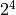
.How many numbers smaller than this number are relatively prime to this number?
x and y are relatively prime or coprime when
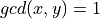
.This number is called the Euler’s phi function or Euler’s totient function and is denoted by the Greek letter “phi”:
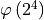
.Clearly, any number that divisible by 2 will have 2 as a common factor with . There are
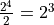
such numbers smaller than or equal to . All other numbers will be relatively prime to .Hence,
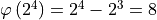
.Thus, for any prime p and positive integer k,
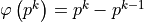
.As a special case, for any prime p,  .
.
The Euler’s phi function is a multiplicative function (stated here without proof). If a and b are relatively prime, then
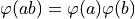
. This can be recursively extended to more than two numbers. For example, if a, b, and c are pairwise relatively prime, then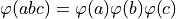
.Hence,
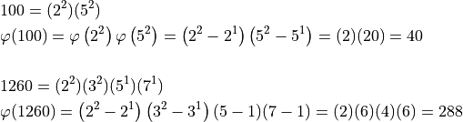
We now state two theorems without proofs. A link is presented at the end of this section for some background which is advanced and can be skipped for most applications.
Euler’s Theorem¶
If a and n are relatively prime, then
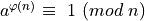
.Example:
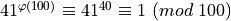
Note:
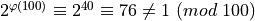
. This does not contradict Euler’s theorem because 2 and 100 are not relatively prime.The special case of Euler’s theorem when n is a prime is called Fermat’s little theorem.
Euler’s theorem is a useful tool while finding remainders.
For example, what are the last two digits of ?
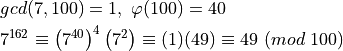
What are the last two digits of
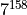
?Let
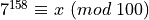
.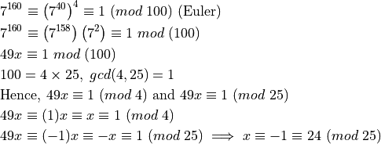
Thus, we need solution of the system
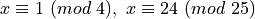
resulting in a unique residue modulo 100.The second congruence short-lists the following residues modulo 100: 24, 49, 74, 99. The one that satisfies the first congruence is 49.
Wilson’s Theorem¶
If p is a prime greater than 2, then  .
.
For any number n,
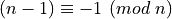
. Thus, Wilson’s theorem can also be written as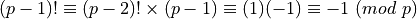
Example:
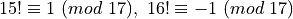
What is the remainder when
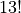
is divided by 17?Let
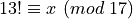
.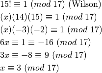